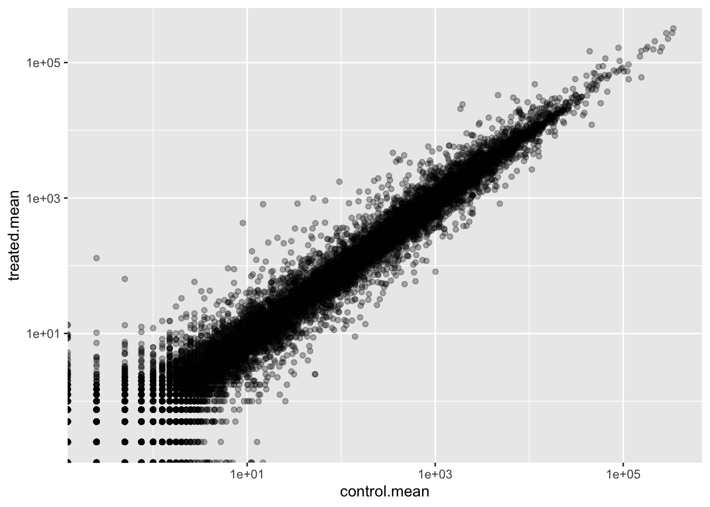
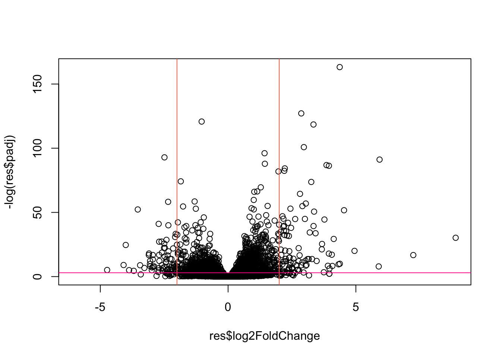
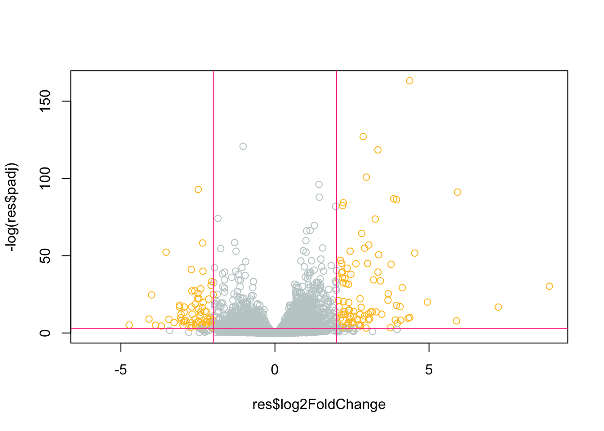
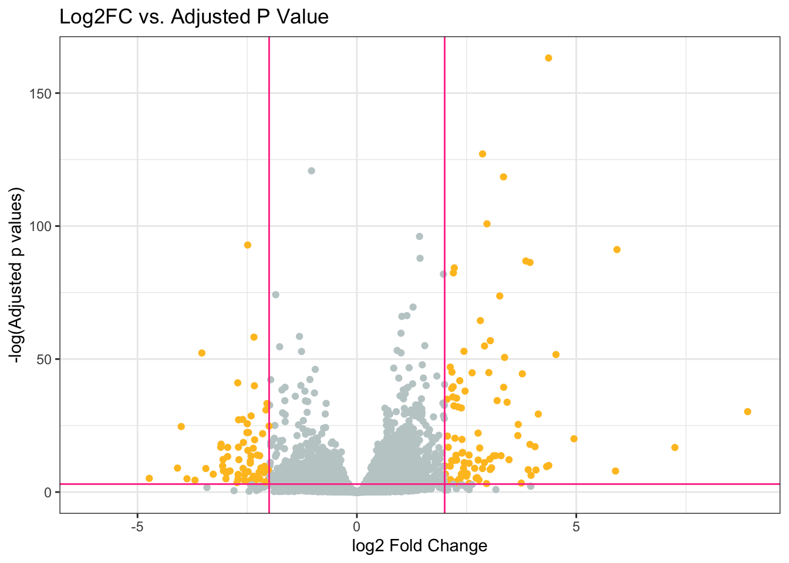

counts <- read.csv("airway_scaledcounts.csv", row.names = 1)
metadata <- read.csv("airway_metadata.csv")Class 13- Transcriptomics and the analysis of RNA-Seq data
Background
Today we will analyze some RNA sequencing data on the effects of a common steroid drug on airway cell lines.
There are two main inputs we need for this analysis:
countData: counts for genes in rows with experiments in the columnscolData: or metadata, tells us about the design of the experiment (i.e. what is in the columns of countData)
Import countData and colData
Q1. How many genes are in this dataset?
head(counts) SRR1039508 SRR1039509 SRR1039512 SRR1039513 SRR1039516
ENSG00000000003 723 486 904 445 1170
ENSG00000000005 0 0 0 0 0
ENSG00000000419 467 523 616 371 582
ENSG00000000457 347 258 364 237 318
ENSG00000000460 96 81 73 66 118
ENSG00000000938 0 0 1 0 2
SRR1039517 SRR1039520 SRR1039521
ENSG00000000003 1097 806 604
ENSG00000000005 0 0 0
ENSG00000000419 781 417 509
ENSG00000000457 447 330 324
ENSG00000000460 94 102 74
ENSG00000000938 0 0 0nrow(counts)[1] 38694There are 38,694 genes in this dataset.
Q2. How many ‘control’ cell lines do we have?
option 1:
metadata$dex[1] "control" "treated" "control" "treated" "control" "treated" "control"
[8] "treated"table(metadata$dex)
control treated
4 4 option 2:
sum(metadata$dex == "control")[1] 4We have 4 control cell lines.
Toy differential gene expression
Let’s try finding the average or mean of the “control” and “treated” columns and see if they differ.
- First we need to find all “control” columns
- Extract just the “control” values for each gene
- Calculate the
mean()for each gene “control” value
- Calculate the
all( colnames(counts) == metadata$id )[1] TRUEThe $dex column tells me whether we have “control” or “treated”
control.inds <- metadata$dex == "control"Extract just the “control” values for all genes
control.counts <- counts[,control.inds]Calculate the mean value for each gene in these “control” columns
control.mean <- rowMeans(control.counts)Q3. Do the same for “treated” to get a
treated.mean
treated.inds <- metadata$dex == "treated"
treated.counts <- counts[,treated.inds]
treated.mean <- rowMeans(treated.counts)Q4. Make a plot of
control.meanvstreated.mean
Let’s store our mean values together in a data.frame for easier book-keeping:
meancounts <- data.frame(control.mean, treated.mean)
plot(meancounts) #plot with base R
library(ggplot2)
ggplot(meancounts) + # using ggplot
aes(x=control.mean, y=treated.mean) +
geom_point(alpha=0.3)
We need to log transform this data as it is so heavily skewed!
plot(meancounts, log="xy")Warning in xy.coords(x, y, xlabel, ylabel, log): 15032 x values <= 0 omitted
from logarithmic plotWarning in xy.coords(x, y, xlabel, ylabel, log): 15281 y values <= 0 omitted
from logarithmic plot
ggplot(meancounts) +
aes(x=control.mean, y=treated.mean) +
geom_point(alpha=0.3) +
scale_x_log10() +
scale_y_log10()Warning in scale_x_log10(): log-10 transformation introduced infinite values.Warning in scale_y_log10(): log-10 transformation introduced infinite values.
A common “rule-of-thumb” is to focus on genes with a log2 “fold-change” of +2 as so called UP REGULATED and -2 as DOWN REGULATED
log2(80/20)[1] 2This means there is 4x more of the gene present.
Let’s add a log2 fold-change value to our meancounts data.frame
meancounts$log2fc <-
log2(meancounts$treated.mean/meancounts$control.mean)
head(meancounts) control.mean treated.mean log2fc
ENSG00000000003 900.75 658.00 -0.45303916
ENSG00000000005 0.00 0.00 NaN
ENSG00000000419 520.50 546.00 0.06900279
ENSG00000000457 339.75 316.50 -0.10226805
ENSG00000000460 97.25 78.75 -0.30441833
ENSG00000000938 0.75 0.00 -InfQ5. Remove any “zero count” genes from our dataset for further analysis.
to.keep <- rowSums( meancounts[,1:2] == 0 ) == 0
sum(to.keep)[1] 21817mycounts <- meancounts[to.keep,]
head(mycounts) control.mean treated.mean log2fc
ENSG00000000003 900.75 658.00 -0.45303916
ENSG00000000419 520.50 546.00 0.06900279
ENSG00000000457 339.75 316.50 -0.10226805
ENSG00000000460 97.25 78.75 -0.30441833
ENSG00000000971 5219.00 6687.50 0.35769358
ENSG00000001036 2327.00 1785.75 -0.38194109Q6. How many genes are “up” regulated at a log2fc threshold of +2?
sum( mycounts$log2fc >= 2 )[1] 314314 genes out of 21,817 genes are “up” regulated.
Q7. How many genes are “down” regulated at a log2fc threshold of -2?
sum( mycounts$log2fc <= -2 )[1] 485485 genes out of 21,817 genes are “down” regulated.
*we are missing some statistics- we need a p-value.
DESeq2 analysis
Let’s do this properly and consider the stats.
We will use DESeq2 to do this:
library(DESeq2)The first function we will use from this package sets up the input in the particular format that DESeq wants:
dds <- DESeqDataSetFromMatrix(countData = counts,
colData = metadata,
design = ~dex)converting counts to integer modeWarning in DESeqDataSet(se, design = design, ignoreRank): some variables in
design formula are characters, converting to factorsWe can now run our DESeq analysis
dds <- DESeq(dds)estimating size factorsestimating dispersionsgene-wise dispersion estimatesmean-dispersion relationshipfinal dispersion estimatesfitting model and testingres <- results(dds)Peek at results:
head(res)log2 fold change (MLE): dex treated vs control
Wald test p-value: dex treated vs control
DataFrame with 6 rows and 6 columns
baseMean log2FoldChange lfcSE stat pvalue
<numeric> <numeric> <numeric> <numeric> <numeric>
ENSG00000000003 747.194195 -0.3507030 0.168246 -2.084470 0.0371175
ENSG00000000005 0.000000 NA NA NA NA
ENSG00000000419 520.134160 0.2061078 0.101059 2.039475 0.0414026
ENSG00000000457 322.664844 0.0245269 0.145145 0.168982 0.8658106
ENSG00000000460 87.682625 -0.1471420 0.257007 -0.572521 0.5669691
ENSG00000000938 0.319167 -1.7322890 3.493601 -0.495846 0.6200029
padj
<numeric>
ENSG00000000003 0.163035
ENSG00000000005 NA
ENSG00000000419 0.176032
ENSG00000000457 0.961694
ENSG00000000460 0.815849
ENSG00000000938 NApadj (adjusted p value)- is a multiple testing correction metric
Result figure: Volcano Plot
Plot of the Log2FC versus the p-value (the adjusted p value).
plot(res$log2FoldChange, res$padj)
This P-value data is again heavily skewed- so let’s log transform it:
plot(res$log2FoldChange, log(res$padj))
We can flip the y-axis by adding a minus sign. This will make it easier to interpret:
plot(res$log2FoldChange, -log(res$padj))
abline(v=-2, col="coral1")
abline(v=+2, col="coral1")
abline(h=-log(0.05), col="deeppink")
Let’s add some (more) color.
mycols <- rep("azure3", nrow(res))
mycols[ res$log2FoldChange <= -2 ] <- "goldenrod1"
mycols[ res$log2FoldChange >= 2 ] <- "goldenrod1"
mycols[ res$padj >= 0.05 ] <-"azure3"
#mycols
plot(res$log2FoldChange, -log(res$padj), col=mycols)
abline(v=-2, col="violetred1")
abline(v=+2, col="violetred1")
abline(h=-log(0.05), col="violetred1")
Q8. Make a ggplot volcano plot with colors and lines as annotation along with nice axis labels.
ggplot(as.data.frame(res)) +
aes(res$log2FoldChange, -log(res$padj)) +
geom_point(col=mycols) +
geom_vline(xintercept= c(-2, +2), col="violetred1") +
geom_hline(yintercept = -log(0.05), col="violetred1") +
labs(x = "log2 Fold Change", y = "-log(Adjusted p values)", title = "Log2FC vs. Adjusted P Value") +
theme_bw()Warning: Removed 23549 rows containing missing values or values outside the scale range
(`geom_point()`).